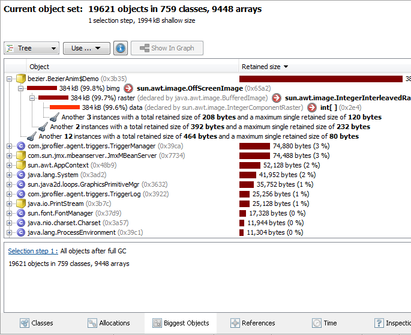
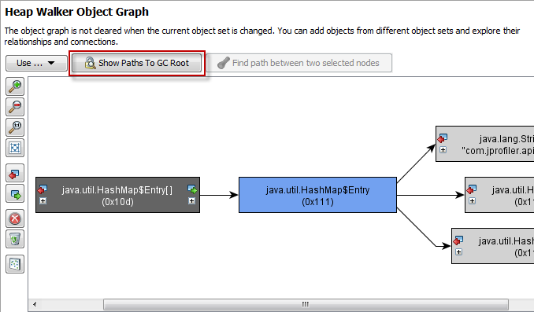
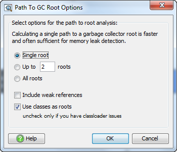
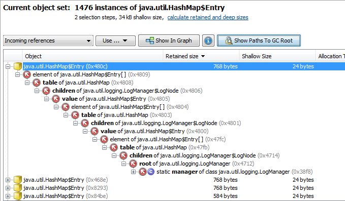
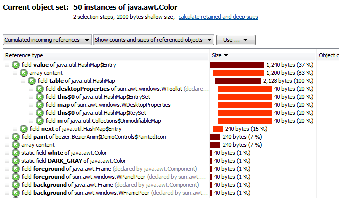

Finding a Memory Leak |
Sometimes it appears to be clear that an object should be garbage collected when looking at the local environment of where the object is created and discarded. However, any call to a different part of a system that passes the object as a parameter can cause the object to "escape" if the receiver intentionally or by mistake continues to hold a reference to the object after the call has completed. Often, over-eager caching with the intention to improve performance or design mistakes where parallel access structures are built are the reason for memory leaks.
The first step when suspecting a memory leak is to look at the heap and object telemetry views. When you have a memory leak in your application, these graphs must show a linear positive trend with possible oscillations on top.
If there's no such linear trend, your application probably simply consumes a lot of memory. This is not a memory leak and the strategy for that case is straightforward: Find out which classes or arrays use a lot of memory and try to reduce their size or number or instances.
The first stop when looking for the origin of a memory leak is the differencing action of the all objects view and the recorded objects view. Simple memory leaks can sometimes be tracked down with the differencing function alone.
First, you observe the differences in the all objects view or the recorded objects view and find out which class is causing the problems. Then you switch to the allocation hotspots view, select the problematic class and observe in the difference column in which method the problematic instances are allocated. Now you know the method in which these instances were created.
An analysis of the code for this method and the methods to which these instances are passed may already yield the solution to the memory leak. If not, you have to continue with the heap walker.
Another tool to observe instance counts that also presents a history of values is the class tracker. The class tracker shows graphs of instance counts versus time for selected classes and packages. When the difference columns in the "all objects" or "recorded objects" views identify suspicious classes, the class tracker can often generate further insight into the evolution of these instance counts since you can correlate jumps or increases in the allocation rate with other telemetry views or bookmarks.
When you take a heap snapshot, you first have to create an object set with those object instances or arrays that should be freed by the garbage collector but are still referenced somewhere. If you've already narrowed down the origin of the memory leak in the dynamic memory views, you can use the "Take heap snapshot for selection" action to save you some work and to start in the heap walker right at the point where you left off in the dynamic memory views.
By default, the heap walker cleans a heap snapshot from objects that are unreferenced but are still not collected by the garbage collector. This behavior can be controlled by the "Remove unreferenced and weakly referenced objects" option in the heap walker options dialog. When searching for a memory leak, this "full garbage collection" is desirable, since unreferenced objects are a temporary phenomenon without any connection to a memory leak.
If necessary, you can now further narrow down the memory leak by adding additional selection steps. For example, you can go to the data view and look at the instance data to find out a number of instances that definitely should have been freed. By flagging these instances and creating a new set of objects you can reduce the number of objects that are in your focus.
Many memory leaks can be traced to object clusters that should be freed but are erroneously held alive through a single string reference. This will lead to a number of objects that have a very large retained size. "Retained size" is the memory that would be freed by the garbage collector if an object were to be removed from the heap. The biggest objects view lists the objects with the biggest retained sizes together with the tree of retained objects. You can use that tree to drill down to find the erroneous references.

The core instrument for finding memory leaks is the reference graph in the heap walker. Here you can find out how single objects are referenced and why they're not garbage collected. By successively opening incoming references you may spot a "wrong" reference immediately. In complex systems this is often not possible. In that case you have to find one or multiple "garbage collector roots". Garbage collector roots are points in the JVM that are not subject to garbage collection. These roots emanate strong references, any object that is linked by a chain of references to such a root cannot be garbage collected.
When you select an object in the incoming references or the graph, the [Show path to GC root] button at the top is enabled.

Potentially there are very many garbage collector roots and displaying them all can lead to the situation that a sizable fraction of the entire heap has to be shown in the reference graph. Also, looking for garbage collector roots is computationally quite expensive, and if thousands of roots can be found, the computation can take very long and use a lot of memory. In order to prevent this, it is recommend to start with a single garbage collector root and search for more roots if required. An option dialog is displayed after you trigger the search:

As you can see in this example, the chain to a garbage collector root can be quite long:

The reason for a memory leak can be anywhere along this chain. It is of a semantic nature and cannot be found out by JProfiler, but only by the programmer. Once you have found the faulty reference, you can work on your code to remove it. Unless there are other references, the memory leak will be gone.
In some cases, you might not succeed in narrowing down the object set to a reasonable size. You object set might still contain a large number of instances that are OK and using the reference graph might not provide any insight in this situation.
If such a situation arises, the cumulated reference tables available in the reference view of the heap walker can be of help. The cumulated incoming reference table shows all possible reference types into the current object set:

From the reference type, you may be able to narrow down the object set. For example,
you may know that one type of reference is OK, but another is not. As a hypothetical
example, the reference from HashMap$Entry in the table above might be suspicious.
By selecting the 31 objects who are referenced in this way, you can discard the other 19
instances and use the reference graph to show the path to a garbage collector root.